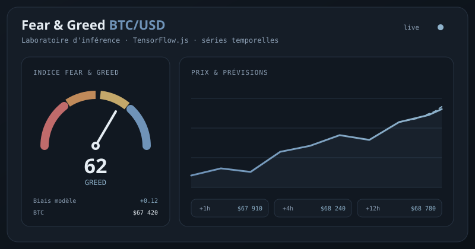
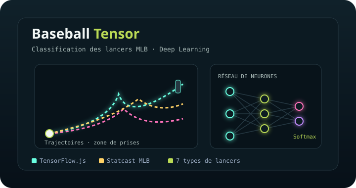

Fear & Greed Tensor
Indice Fear & Greed, graphiques horaires/journaliers/hebdomadaires, entraînement et prévisions de prix BTC avec TensorFlow.js.
Ouvrir ↗TENSORFLOW.JS · APPRENTISSAGE & INFÉRENCE
Expériences de machine learning interactives, en local dans le navigateur. Entraînez, visualisez et prédisez en temps réel.
CHOISISSEZ UNE APPLICATION
02 APPS DISPONIBLES

Indice Fear & Greed, graphiques horaires/journaliers/hebdomadaires, entraînement et prévisions de prix BTC avec TensorFlow.js.
Ouvrir ↗
Classification des lancers MLB (Statcast) par réseau de neurones : entraînement, visualisation 3D des trajectoires et inférence interactive.
Ouvrir ↗